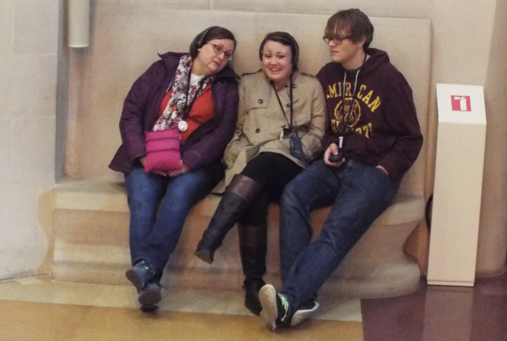
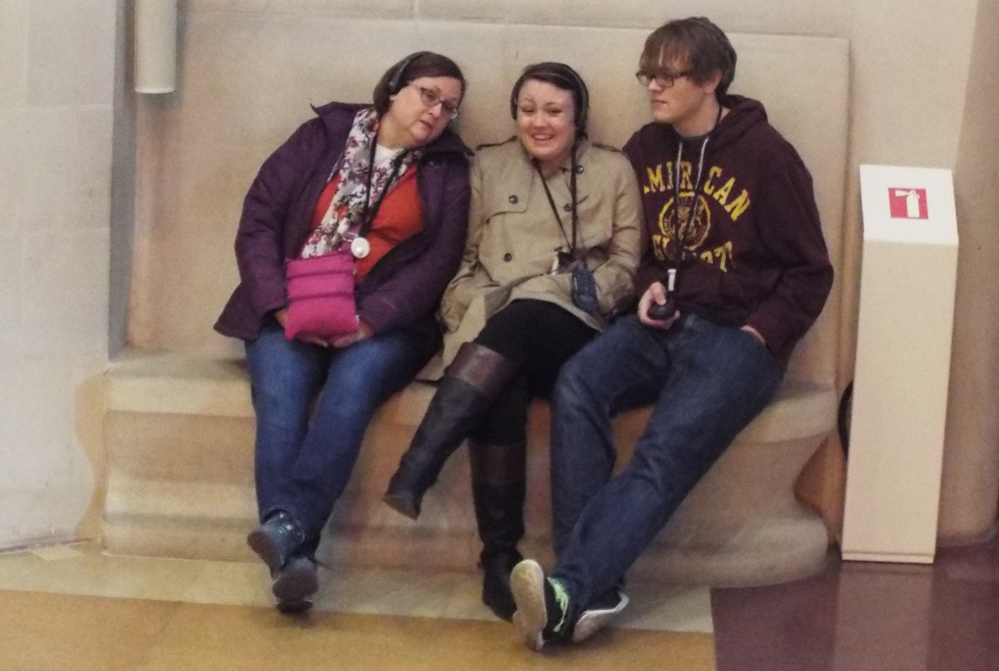

About Me
Emily Finch is a driven, passionate, and energetic young professional seeking to engage projects that combine law and information science. She is interested in finding out more about careers in fields of law, public policy, and information; she hopes to find a career that unites these interests upon completion of her degrees. Emily Finch is a graduate of Kalamazoo College where she received her Bachelor of Arts in English and history with a minor in political science and concentration in American studies. She is continuing her education at the University of Michigan in the School of Information where she is pursuing a Masters in Science of Information with focuses in library and archive management and digital curation. At the University of Michigan, Emily hopes to continue to refine her work with non-profits, museums, libraries, and archives and in the field of information and cultural heritage law. Upon completion of her MSI degree in 2019 Emily plans to attend law school. In her free time Emily enjoys volunteering for the red cross and at cultural heritage sites, collecting old books, baking (especially cookies), and traveling.
Get to Know Emily Finch: The images below show some of Emily's favorite memories, people, and things.
 
